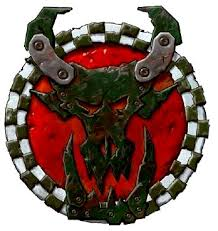
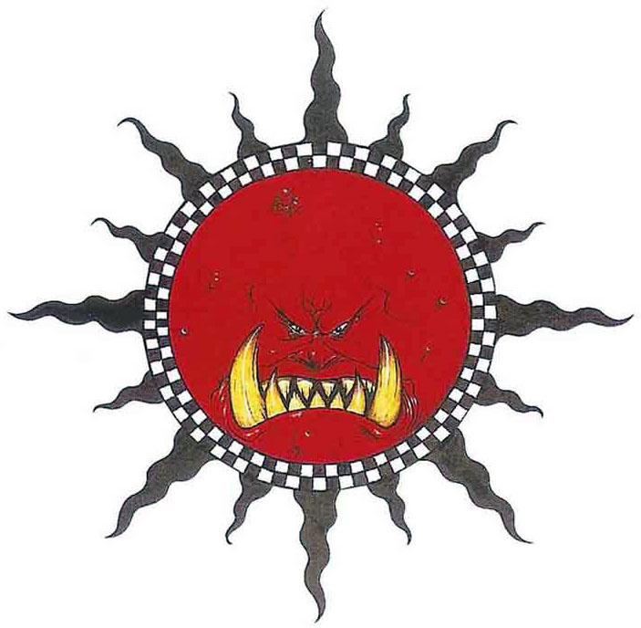
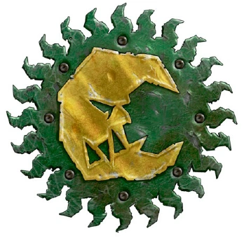
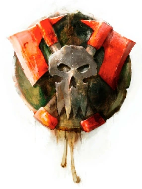
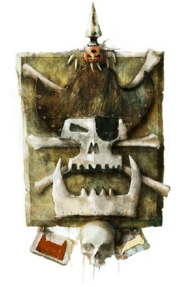

KLAN WĘŻOWYCH UKĄSZEŃ
"STARE DROGI SĄ NAJTWARDSZE"

Ich paradygmat to powrót do korzeni. Gardzą technologią.
Ich twardość to sempiterny dowód na siłę tradycji. Zero prokrastynacji!
[ POWRÓT DO BAZY ]
Gof nie kocha niczego bardziej niż łomotu spluw. Ta preferencja do niemal sempiternych bójek utrzymuje ich w gotowości.
Inne klany postrzegają jako pejoratywne. Prawdziwy Gof rozwala mordy za darmo.
[ POWRÓT DO BAZY ]
Ich życiowy paradygmat: im szybciej, tym lepiej. Ich eskapizm od powolnego marszu jest absolutny.
Brak ruchu to dla nich stan indyferencji. Tu nie ma miejsca na ambiwalencję!
[ POWRÓT DO BAZY ]
To elita finansowa. Ich zęby zapewniają im sempiterny dopływ gotówki.
Ich szpej to jaskrawa dychotomia żółci i czerni. Złoto to ich pasja!
[ POWRÓT DO BAZY ]
Ich paradygmat to powrót do korzeni. Gardzą technologią.
Ich twardość to sempiterny dowód na siłę tradycji. Zero prokrastynacji!
[ POWRÓT DO BAZY ]
Krwawe Topory budzą w innych klanach ambiwalencję. Ich zmysł taktyczny jest postrzegany jako coś nie-orkowego.
Używają kamuflażu i Kommandosów, wykazując indyferencję wobec drwin innych Chłopaków.
[ POWRÓT DO BAZY ]
Freebooterz to wygnańcy, dla których eskapizm od klanowej dyscypliny stał się sposobem na życie.
Ich zamiłowanie do przepychu jest sempiternym dowodem na to, że za zęby można kupić wszystko.
[ POWRÓT DO BAZY ]